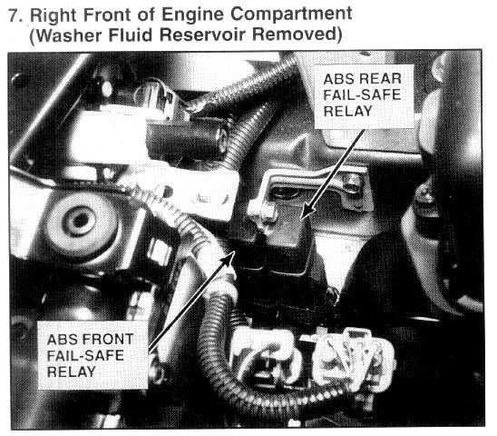

Operation CHARM
: Car repair manuals for everyone.
Home
>>
Acura
>>
1994
>>
Integra (GS-R) L4-1797cc 1.8L DOHC (VTEC)
>>
Repair and Diagnosis
>>
Relays and Modules
>>
Relays and Modules - Brakes and Traction Control
>>
ABS Main Relay
>>
Locations
>>
Rear
Rear

Right Front Of Engine Compartment
(Water Fluid Reservoir Removed)